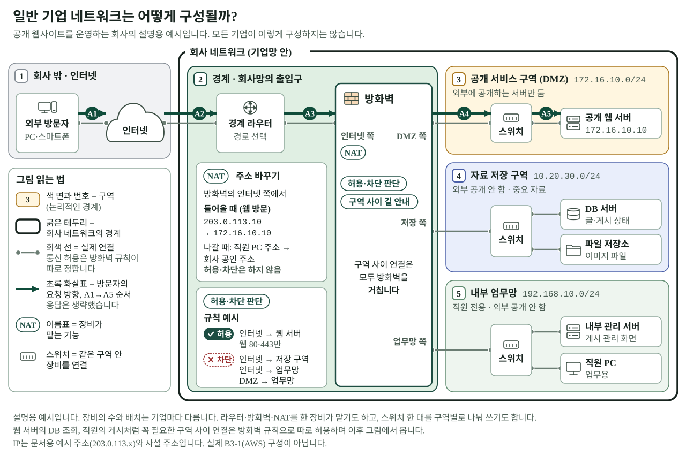
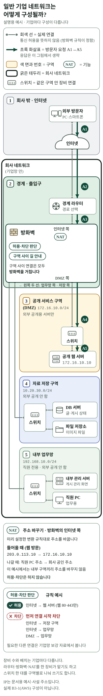
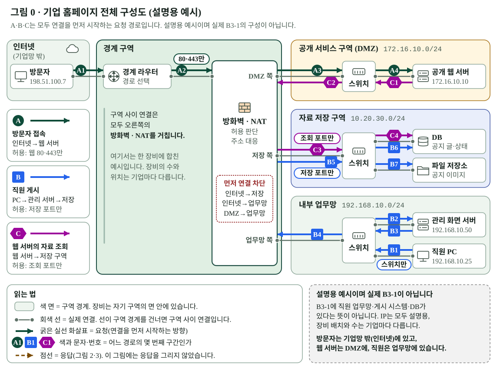

B3-1 시각 스토리 · Scene 01 시안 (Owner 검토용)
일반 기업 네트워크 전체 구조도. 서비스에 반영되지 않은 초안입니다. 원본 SVG를 그대로 표시합니다.
1. 노트북용 · 원래 크기(1280)


2. 노트북용 · 가이드 본문 폭(900px)에서 보이는 크기
3. 휴대전화용 · 390px 화면 폭


4. 비교: 현재 승인된 그림 0 (main 브랜치)

일반 기업 네트워크 전체 구조도. 서비스에 반영되지 않은 초안입니다. 원본 SVG를 그대로 표시합니다.


